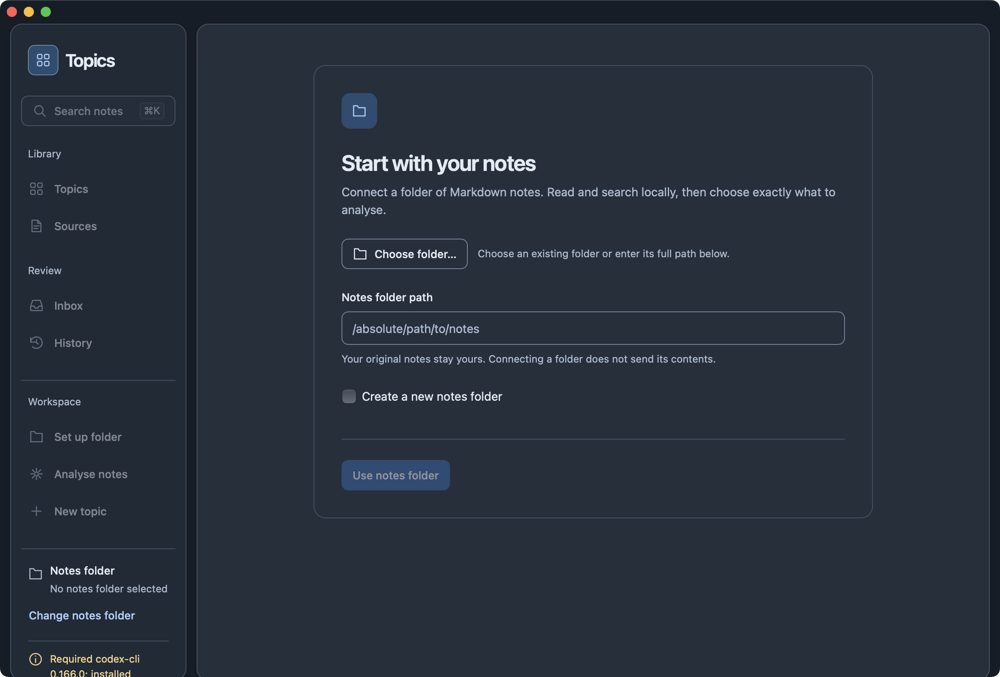
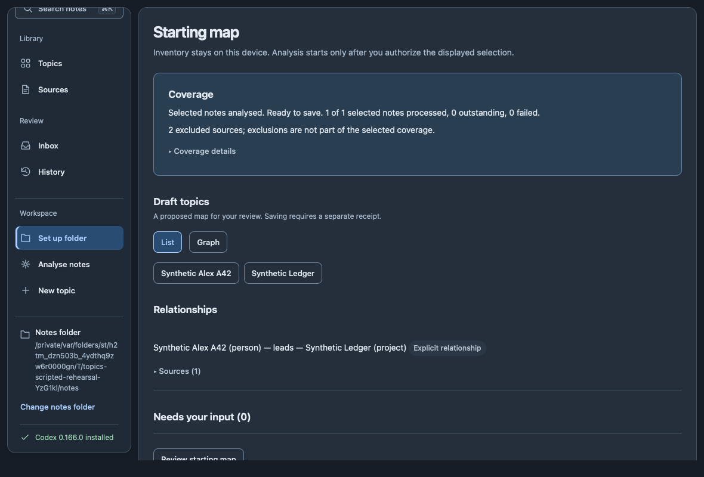
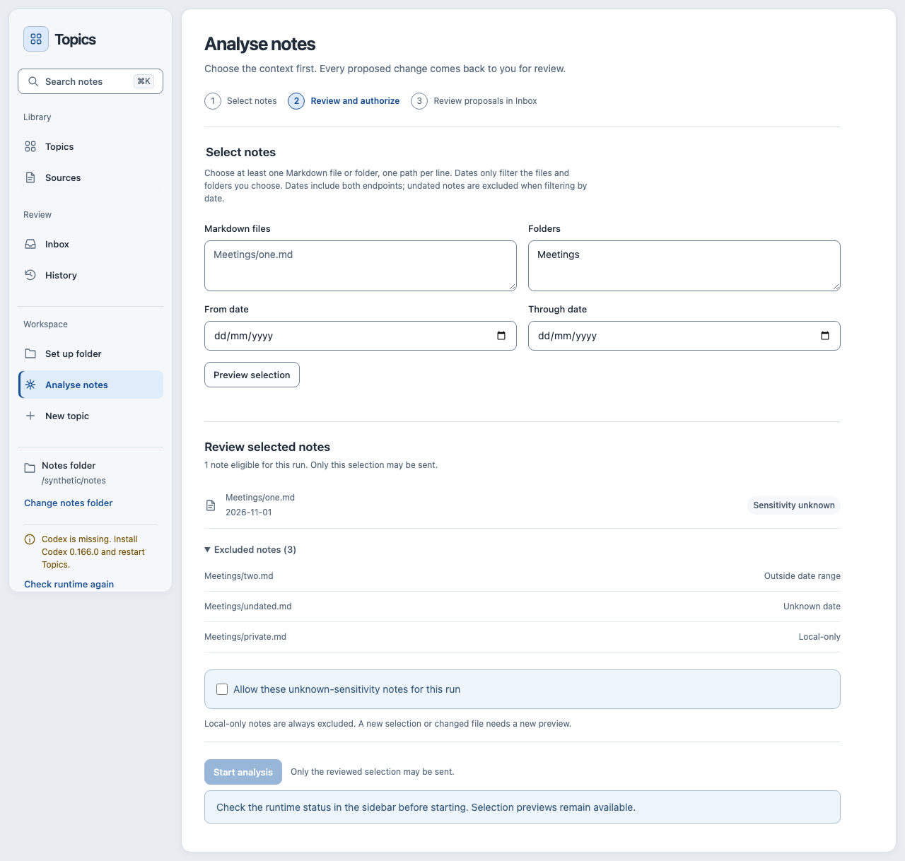
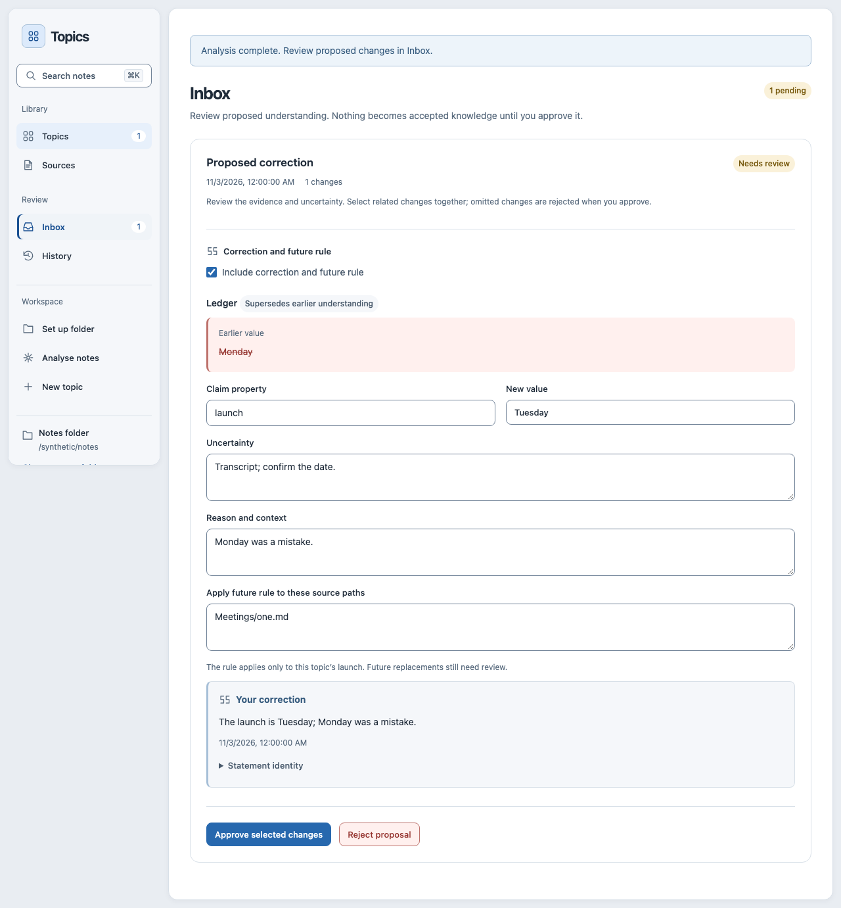
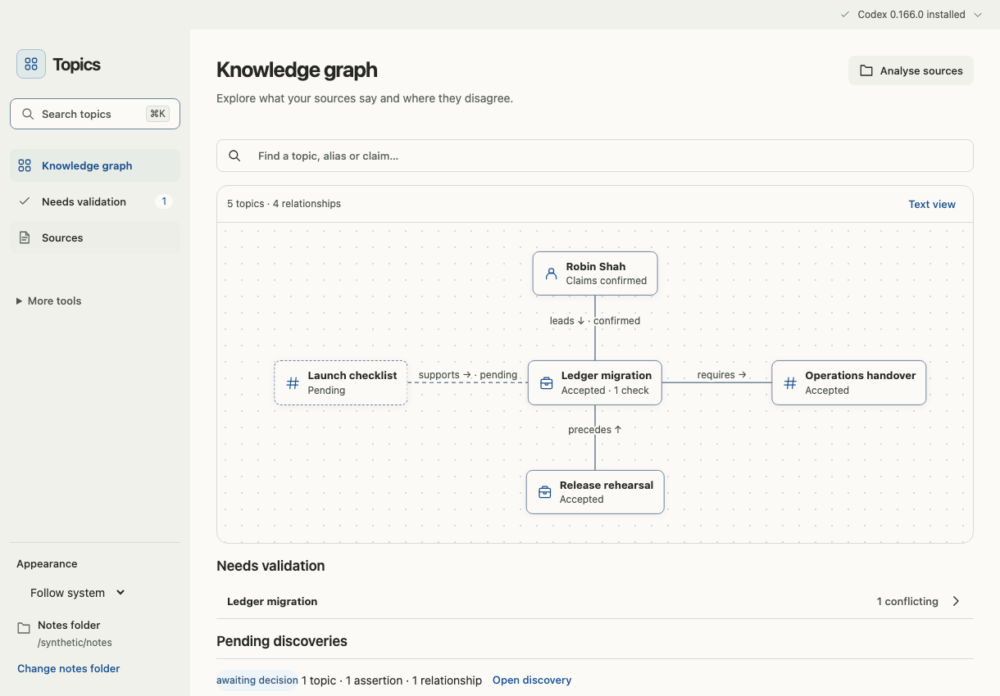
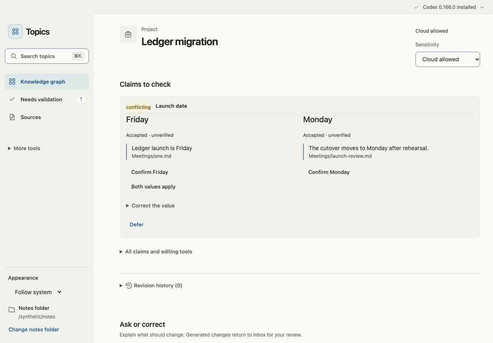
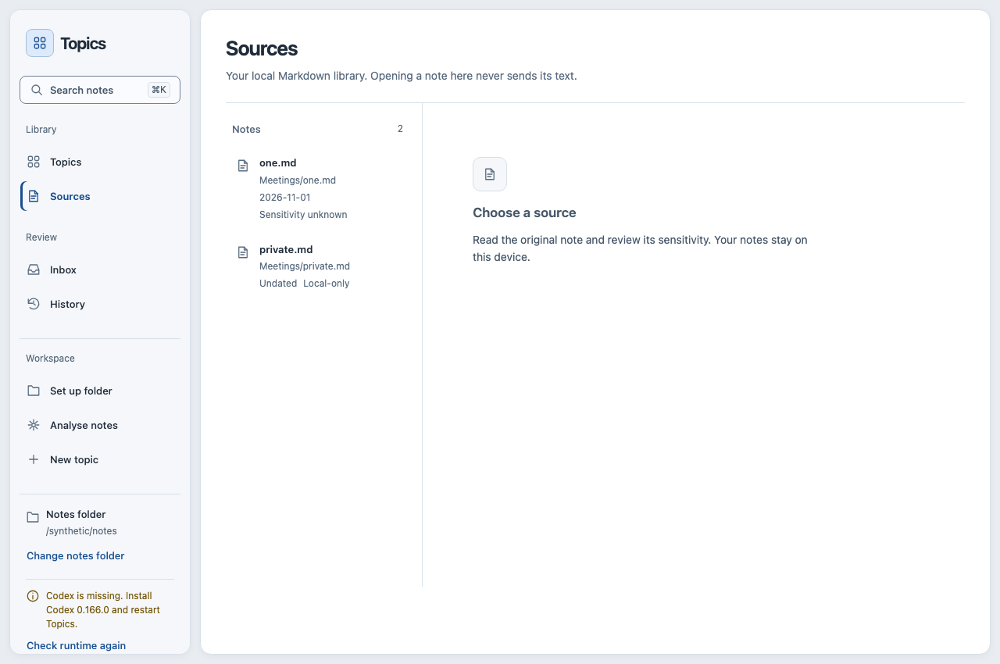
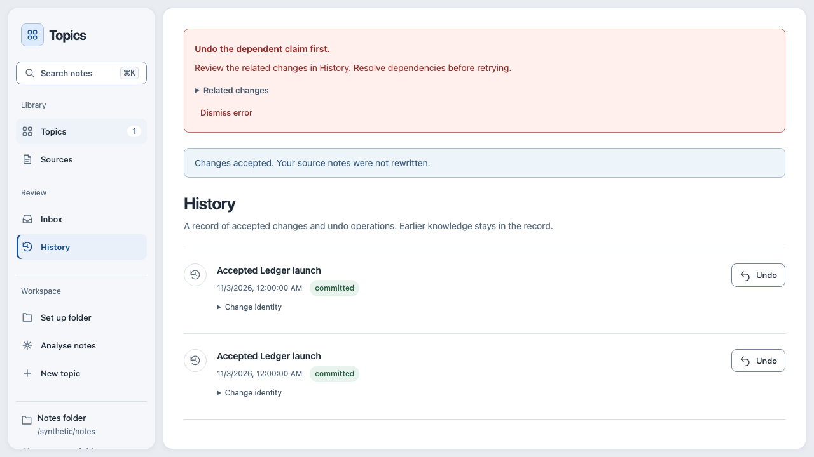

Diagrams on this page are drawn with Mermaid, loaded from the jsDelivr CDN. If they show as plain text, enable JavaScript and allow cdn.jsdelivr.net; the surrounding text describes each flow.
How the app currently works
Topics
A local-first macOS app that turns a folder of Markdown notes into a living map of the people, projects and threads you follow, with every fact cited back to a note. A model proposes; you approve. Your notes are never rewritten.
Core principles
These rules shape nearly every module. Most of the code's complexity is there to enforce them.
Markdown is authoritative
Accepted knowledge lives as small Markdown files in <notes>/topics/. SQLite/FTS is a disposable index you can delete without losing anything.
Humans approve every write
Model output only ever becomes a pending proposal. Accepting, editing, rejecting and undoing are human-only actions.
Privacy at the boundary
Sources are Cloud allowed Unknown Local only. Local-only bytes, and topics derived from them, never reach the model.
Everything is cited
Claims carry path, document hash, byte range, passage hash and the exact excerpt. A changed source goes stale. It is never quietly re-anchored.
Architecture
System map
One desktop process hosts the UI, the store and the runtime. Codex runs as a sandboxed child that can reach your notes only through Topics' own MCP server.
flowchart LR
subgraph Mac["Your Mac"]
direction LR
subgraph App["Topics.app (Tauri 2)"]
UI["React / TS UI
main.tsx · Pilot · FolderSetup
TopicDetail · ProposalEditor"]
IPC["Tauri commands
src-tauri main.rs + workspace.rs
55 registered handlers"]
SETUP["topics-setup
batched setup jobs"]
RT["topics-runtime
Codex app-server client
scoped MCP server"]
STORE["topics-store
TopicsService · WorkspaceService"]
CORE["topics-core
wire types · validation"]
UI -- "invoke(request)" --> IPC
IPC --> STORE
IPC --> SETUP
IPC --> RT
SETUP --> RT
SETUP --> STORE
RT -. "HostTools adapter" .-> STORE
STORE --> CORE
RT --> CORE
end
CODEX["Codex CLI 0.166.0
(signed in, sandboxed:
denied read of notes root)"]
NOTES[("Notes folder
*.md (read-only)
topics/ (app records)")]
APPDATA[("App data
config · store.lock
SQLite/FTS · workspaces/<path ID>:
journals · snapshots · pending")]
RT <== "NDJSON stdio" ==> CODEX
CODEX -- "MCP via --topics-mcp-proxy:
scope_sources · propose_changes" --> RT
STORE --> NOTES
STORE --> APPDATA
end
CODEX <-. "HTTPS" .-> CLOUD(("Model provider"))
CLIENT["Configured local MCP client"] -- "stdio: topic_search, topic_detail" --> CLI["topics mcp
fixed root and topic IDs"]
CLI --> STORE
Crates & layers
Dependencies point inwards. Core knows nothing about files, SQL, UI or the network, and the store knows nothing about the runtime, Tauri or React.
topics workspace <cmd> 'JSON', used for recovery and tests.fail_on_skipped.TopicsService (scan · SQLite FTS5 · watcher · search) and WorkspaceService (scopes, proposals, decisions, Markdown records, journals, undo, pilot briefings and reviews, setup inventory, drafts and graph).src/generated.| Where | Biggest files | What lives there |
|---|---|---|
topics-store/src/workspace | knowledge.rs · proposals.rs · persistence.rs · scopes.rs | Graph, caller-scoped topic lookup, journalled writes and sensitivity |
topics-store/src/workspace/setup | review.rs · graph.rs · jobs.rs · decisions.rs | Inventory, draft map, graph, topic-centred decisions |
topics-runtime/src | bridge.rs · lib.rs · isolation.rs | MCP tools, run lifecycle, sandbox preflight |
apps/desktop/src | KnowledgeGraph.tsx · KnowledgeDetail.tsx · FolderSetup.tsx | Graph shell, topic validation, folder analysis and secondary tools |
Data model & storage
The graph joins committed topic and claim revisions, typed connections and review metadata with pending proposals and folder-job checkpoints. Reading the graph reconciles draft status in memory. An unreadable draft has its own warning, and the graph keeps showing accepted topics. Confirmation receipts bind the exact revisions and citation state. A receipt can record that two values both apply. A correction records a user statement and supersedes the cited revision. Validation deferrals and the retrieval switch live in the workspace’s app-data partition.
erDiagram
TOPIC ||--o{ CLAIM : "subject of"
TOPIC ||--o{ CONNECTION : "from / to"
CLAIM ||--o{ EVIDENCE : "cites"
EVIDENCE }o--|| SOURCE : "passage in"
CLAIM ||--o{ CLAIM : "supersedes"
RULE }o--|| TOPIC : "scoped to"
CLAIM ||--o| STATEMENT : "user correction"
OPERATION ||--o{ CLAIM : "commits"
PROPOSAL ||--o{ CANDIDATE : "contains"
TOPIC { uuid id enum kind string name list aliases enum sensitivity }
CLAIM { uuid id uuid revision_id string predicate string value string uncertainty }
RULE { string predicate string match_value string replacement scope paths }
Topic kinds
Person Project Thread
Candidate kinds (what a proposal holds)
topic · claim · connection · correction (claim + rule) · unresolved_identity
Proposal origins & status
analysis · chat · manual → Pending Accepted Rejected Conflict
Where things live
Each record starts with frontmatter schema: topics/v1, record_kind, id, operation_id, data: {typed JSON}, followed by a readable Markdown body.
The cloud boundary: one analysis run
Each run gets a single-use capability bound to its root, scope and run IDs. The model can read only the confirmed snapshot and propose candidates. It has no tools to approve, write or browse your inventory.
sequenceDiagram autonumber actor You participant UI as React UI participant WS as WorkspaceService participant RT as Runtime + MCP participant CX as Codex (sandboxed) You->>UI: Analyse notes: pick files, folders, dates UI->>WS: scope_preview WS-->>UI: included / excluded / unknown, hashes You->>UI: Confirm the preview (consent) UI->>WS: analysis_start → run capability UI->>RT: start run RT->>CX: thread + turn (pinned config, 2 tools) CX->>RT: scope_sources(scope_id) RT->>WS: scope_read (eligible snapshot only) CX->>RT: propose_changes(candidates) RT->>WS: validate_proposal (buffer, publish nothing) CX-->>RT: turn completed RT->>WS: stage_proposal under a CommitPermit WS-->>UI: Pending proposal → Inbox Note over CX,WS: Error or cancel → run_cancel. A consumed capability can't read or publish late. You->>UI: Accept / edit / reject UI->>WS: proposal_decide (human-only) WS->>WS: journal → write Markdown → operation marker
Process isolation
On macOS Codex runs under a Seatbelt profile that denies read and write of the notes root. Preflight checks the binary, version and profile before every run.
Consent is exact
Consent is bound to path, content hash and operation sequence. "Unknown" consent covers one run only and can never lift Local only.
Taint spreads
A topic derived from local-only evidence becomes private too. Releasing it takes an explicit human declassification.
Recoverable writes & undo
flowchart LR A["Approve"] --> B["Journal in app data:
old bytes or absence
+ staged bytes"] B --> C["Check every target's
expected hash"] C -->|match| D["Temp file → flush →
rename → dir flush"] C -->|mismatch| X["Conflict: keep old,
staged and current bytes"] D --> E["Write operation marker
LAST = committed"] E --> F["Projection rebuilt
from Markdown"] F --> U["Undo = a new compensating
operation (tombstone / restore),
with dependency checks"]
On restart, a commit resumes only if current hashes match the expected or already-written bytes. Otherwise Topics preserves everything and reports a conflict. Projections ignore anything without a commit marker.
User guide
1 · Connect a notes folder
- Launch
Topics.app, or runnpm run tauri devinapps/desktop. - Choose an existing notes folder, or create an empty one. Manual path entry also works.
- Select Use notes folder. Topics indexes the folder locally and starts a watcher (it polls about every 200 ms).
- For chat and analysis, sign in to Codex CLI 0.166.0 yourself. Topics never reads your tokens. Without Codex, browsing, search and manual capture still work.
Until a folder is connected, connecting is the only thing on screen. Each time you pick a folder it gets a new root ID: accepted knowledge stays, while pending approvals and scopes are invalidated.

A connected folder opens on its knowledge graph. Search topics with ⌘K or Ctrl+K. Sources holds the input library. More tools opens note search, Inbox, History, Today and manual capture.
2 · Build a starting map with Analyse sources

If files change before they are sent, Topics shows the old and new manifests side by side and asks for fresh consent. Batches already completed are kept. Saving a sourced import is not the same as verifying that each statement is true.
3 · Analyse notes and review proposals in Inbox
More tools → Analyse notes is the one-off route to a proposal: choose files, folders and optional dates, inspect the scope preview of included, excluded and unknown notes, then confirm consent before the run starts.

Every model run, chat correction and manual topic lands here as a proposal. The Inbox badge counts pending proposals.
- Candidates are grouped by type, each with its evidence, uncertainty and an include toggle.
- Edit a value before accepting. Topics records your edit as a user-edit statement in the same operation.
- Corrections show the old and new values plus the rule you're approving.
- Accept or Reject. If the knowledge changed underneath, the proposal becomes Conflict and needs a fresh analysis.
- Duplicate people are never merged by name alone. Ambiguity is shown as an unresolved identity for you to decide.

4 · Explore the graph and validate claims
Select a node, follow a typed relationship or search for a topic by name, alias or assertion. Keyboard users can tab to nodes or open Text view for the full set of topics and directed relationships. Pending discoveries take you to their original proposal or folder decision.

Open Needs validation or select a topic with checks. Compare competing passages side by side. Choose Both values apply to confirm two compatible assertions, such as two contributors. To choose one value or enter a correction when their periods differ, explicitly select the full periods and check the dates on the receipt. This applies your choice even outside their overlap. Defer saves the check for later. If you restore a missing source before approving a judgment, inspect a fresh receipt. Earlier revisions retain the source assertions. History offers compensating undo. Separate effective periods appear as a timeline. Simply unverified claims remain available for reading.

5 · Today and the Friday sync pilot
Open Today under More tools. It tests whether a dated briefing cuts the work of preparing for and correcting a weekly meeting.
Changes since the last kept meeting
Source status
⚠ 1 unavailable
◔ 2 changed, not analysed
✓ 9 analysed
Route
Set up folder → authorise the changed batch
Illustrative mock of the Today layout, drawn from Pilot.tsx and docs/design/screens.md (no screenshot is committed yet).
flowchart LR T["Open Today
local version check
+ freshness / gaps"] --> K["Keep briefing
for meeting
(dated snapshot)"] T --> FB["Correct an item, or
Topics missed something
(one sentence)"] FB --> FV["Saved feedback view
(not a cutoff)"] K --> M["Meeting"] M --> FB2["Feedback on the kept briefing
Saved briefings → Open"] FB2 --> W["Weekly review
Baseline vs Pilot:
prep min, correction min,
material changes, misses"] FV --> W W --> SC["Scoped correction
→ preview → approve
→ check the next occurrence"] SC -.-> T
| Signal measured each week | How it's read |
|---|---|
| Correction effort | Prep and correction minutes, plus distinct wrong items |
| Known in-scope misses | Misses with evidence analysed before the meeting, as numerator/denominator. Pending, new and unknown are reported separately |
| Action quality | Marked unavailable until draft action capture ships |
| Learning | For each approved rule: later eligible occurrences and recurrences, or "no later example" |
Decision rule: one baseline plus two pilot syncs. Proceed to the two-folder milestone if both pilot weeks need less prep plus correction time than baseline, at least one useful change surfaced before a meeting, and misses per eligible change didn't rise.
6 · Sources, search, manual capture and history
Set up a local MCP client
In Sources, open Local MCP access and enable retrieval. Build the CLI with cargo build --release -p topics-cli. Configure your client to launch the absolute path to that executable with mcp, the displayed folder ID and each allowed topic ID as separate arguments. The desktop and CLI use the same app-data directory. Call topic_search with a query, then topic_detail with a returned ID.
The caller can retrieve accepted Cloud allowed topics within its configured set. Each returned assertion or relationship requires current, explicitly released citations. Raw notes, passage text, personal judgments and pending discoveries stay local. Disable the folder switch to revoke access on the next call.


More tools → Search notes
Local FTS over your notes, including private ones; app records are excluded. Highlights render as text nodes, never as raw HTML.
New topic
Manual capture with no model needed. It goes through the same Inbox approval.
Undo
Undo is a compensating operation. An update can be undone before its creation, but an undo can't itself be undone: re-propose instead.
Product
Feature breakdown
| Area | Feature | Status | Key code |
|---|---|---|---|
| Foundation | Notes root: choose, create, switch | Shipped | store/lib.rs, scan.rs |
| Full-text search with safe highlights | Shipped | Search.tsx, FTS5 | |
| Live watcher and cross-process lock | Shipped | store.lock, WatchHandle | |
| Graph workspace | Workspace graph and topic lookup | Available | knowledge.rs, KnowledgeGraph.tsx |
| Passage comparison, full-period and compatible-value judgments, deferral | Available | setup/validation.rs, KnowledgeDetail.tsx | |
| Scoped local stdio retrieval | Opt-in | topics-cli/src/retrieval.rs | |
| Knowledge | Topics (person, project, thread) with cited claims and connections | Shipped | TopicDetail.tsx, Evidence.tsx |
| Analyse notes: scoped preview, consent, run | Shipped | Scope.tsx, runtime | |
| Inbox: edit, accept or reject proposals | Shipped | ProposalEditor.tsx, proposals.rs | |
| Topic chat corrections with scoped rules | Shipped | workspace_chat_start | |
| History and compensating undo | Shipped | persistence.rs | |
| Privacy | Sensitivity labels, taint, exact consent | Shipped | scopes.rs, Sources.tsx |
| Source identity repair (rename/edit) | Shipped CLI | source_identity_repair | |
| Folder setup | Local inventory with suggested roles | Shipped | setup/inventory.rs |
| Batched, resumable draft map with reconsent | Shipped | topics-setup, setup/jobs.rs | |
| Draft graph, receipt, topic-centred decisions | Shipped | FolderSetup.tsx, ContextReview.tsx | |
| Friday pilot | Today briefing with source freshness | Pilot | Pilot.tsx, pilot_briefing.rs |
| Kept meeting briefings and feedback views | Pilot | pilot_views.rs | |
| Weekly review scorecard (baseline vs pilot) | Pilot | pilot_review.rs | |
| Cross-note scoped corrections and learning check | Pilot | pilot_review.rs | |
| Later | Automatic action/commitment extraction | Planned | n/a |
| Task management, bullet-journal migration | Planned | n/a | |
| Two-folder / multi-source library | Gated on pilot | features/multi-source-library | |
| Large notes handling | Planned | features/large-notes |
Milestones so far
Known limits (from the repo's own docs)
- Conflict checks compare different values of the same normalized predicate with potentially overlapping effective dates. The reader can confirm both values. A single-value judgment across differing periods covers their full original ranges. To leave the historical scope open, defer the check. Semantic contradictions across differently named predicates require human interpretation.
- Local retrieval uses a configured stdio client and stable folder and topic IDs. There is no named-client integration.
- macOS only (Apple silicon, ad-hoc signed). No updater, notarisation or install channel yet.
- Chat and analysis need the exact Codex CLI 0.166.0, already signed in. Other runtimes fail with guidance.
- Full scans hold the store lock with no timeout. The 2-second target is tested only on synthetic fixtures.
- Cooperative locking assumes a single app-data directory per notes root.
- Writes are recoverable per file, not atomic across files. No real power-loss campaign has been run.
- A moved file edited before inventory can lose its hash lineage. Unicode NFC/NFD name variants aren't unified.
- Repeated assertions with the same topic, predicate and value are suppressed in Today, so a decision that reverts to an earlier value may need to be reported as a miss.